Patch 3696
There are four main portions to this balance patch. First is the nerf to direct fire T3 Land units. Second is the rebalance of ACU combat upgrades. Third is the increase in Experimental Unit build times and fourth is an overcharge rework. A T3 land rebalance has been promised for a very long time so we are very happy to finally be at the beta stage for this important development in Forged Alliance. The aim is to allow a larger window on a large number of maps for the T2 land stage. It is potentially one of the most interesting stages of the game, with many different unit compositions and matchups coming into play, but for a long time it has been a very short stage of gameplay because of the effectiveness of T3 land and the effectiveness of commanders. The balance team found it necessary to introduce combat ACU upgrade changes, an overcharge rework and Experimental build time increases with the T3 land rebalance. Combat ACU upgrades have been shown to be very strong recently, becoming a staple of teamgames. Some of these upgrades are too dominant and with the T3 land changes, some nerfs are required to prevent the ACU from being too powerful.
With the delays this patch has faced, other smaller issues have been admitted into this patch as they were deemed important. The most notable of these are the addition of a delay to teleport, a nerf of shieldboats and several other changes listed below.
- The Balance Team
ACUs
 Aeon
Aeon
- BuildCostMass:
1000→ 1300 - BuildTime:
1000→ 1300
Personal Shield Generator:
- BuildCostEnergy:
93750→ 123750 - BuildCostMass:
1500→ 2300 - BuildTime:
1750→ 2450 - ShieldMaxHealth:
29000→ 25000 - ShieldRegenRate:
37→ 32
Heavy Personal Shield Generator:
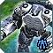 UEF
- NewHealth:
2000→ 1500
Nano-Repair System:
- BuildCostMass:
1500→ 2300 - ShieldMaxHealth:
24000→ 19000 - ShieldRegenRate:
35→ 30
Personal Shield Generator:
- BuildCostMass:
3000→ 3600 - BuildTime:
2800→ 3400
Shield Generator Field:
 Seraphim
Seraphim
- AdditionalDamage:
750→ 620 - BuildCostMass:
4800→ 5400 - BuildTime:
4200→ 4600
Refracting Chronotron Amplifier:
- BuildCostEnergy:
42000→ 56000 - BuildCostMass:
1200→ 1800 - BuildTime:
1200→ 1800 - NewHealth:
3000→ 2000
Nano-Repair System:
- BuildCostMass:
4500→ 5800 - BuildTime:
4200→ 4600
Enhanced Nano-Repair System:
T3 Land Combat
 Harbinger:
Harbinger:
The Harbinger rebalance puts more focus on the shield. The shield accounts for more of the total hp and will regen and recharge much more quickly than before. This emphasises the micro capabilities of the Harb, allowing for more hit and run combat tactics.
- Health:
4600→ 3050 - Shield Health:
1300→ 1000 - Shield Regen Rate:
9→ 30 - Shield Recharge Time:
63→ 40 - ShieldRegenStartTime:
3→ 2 - Power Drain:
25→ 30 - BuildTime:
4500→ 3600 - Speed:
3→ 2.85 - Acceleration:
3→ 3.2 - Turn Rate:
120→ 130 - Damage:
300→ 320 - Rate of Fire:
1.25→ 1 - Range:
28→ 26 - DPS:
375→ 320 - Muzzle Velocity:
30→ 40
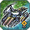 Othuum:
More emphasis is put on the longer range high alpha damage weapon of the Othuum and its target priorities have been fixed to be in line with other T3 tanks.
- Health:
6700→ 5000 - Acceleration:
2.6→ 3.5 - SizeY:
0.45→ 0.65 - SizeZ:
2.0→ 2.3 - Damage:
75→ 39 - Muzzle Velocity:
35→ 40 - Turret Yaw Speed:
90→ 120 - Combined DPS:
300→ 156 - Damage:
400→ 525 - Range:
32→ 28 - Muzzle Velocity:
30→ 40 - DPS:
100→ 131 - Range:
32→ 28 - Othuum now prioritises T3 over T2 over T1 instead of the reverse.
First 2 Guns:
3rd Gun:
Torpedo Weapon:
Target Priorities:
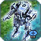 Percival:
- Health:
9300→ 7200 - BuildTime:
6000→ 4800 - Speed:
22.1 - Acceleration:
→ 2.1 - TurnRate:
60→ 70 - Damage:
1600→ 1670 - Rate of Fire:
0.25→ 0.2 - Range:
35→ 34 - Muzzle Velocity:
35→ 38 - Turret Yaw Speed:
60→ 90 - DPS:
400→ 334
The Percival now has the longest range of the T3 tanks and bots so kiting is now very important, even against Bricks. A turret yaw speed increase and slight muzzle velocity increase enables better micro capabilities.
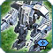 Titan:
- Health:
2200→ 2550 - Shield:
1200→ 600 - Recharge Time:
60→ 15 - Regen Rate:
9→ 20 - Speed:
4→ 3.8 - Acceleration:
4→ 4.2 - Range:
20→ 22 - Muzzle Velocity:
30→ 35 - Turn rate:
150→ 120 - Titan now prioritises T3 over T2 over T1 instead of the reverse.
The titan has a smaller health shield but this regens very quickly, sometimes even during the course of a battle if you can keep them alive. It's target priorities are also fixed as with the Othuum.
Target Priorities:
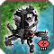 Brick:
- Health:
9000→ 7500 - BuildTime:
6000→ 4800 - Speed:
2→ 2.3 - Acceleration:
2→ 2.3 - TurnRate:
60→ 65 - Damage:
150→ 125 - Range:
35→ 32 - MuzzleVelocity:
35→ 42 - Turret Yaw Speed:
60→ 90 - DPS:
375→ 312.5
The brick now has slightly less range than a Percy but gains speed, turn rate and muzzle velocity to allow for better micro.
Main Weapon:
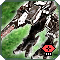 Loyalist:
- Health:
3100→ 3000 - Speed:
4→ 3.8 - Acceleration:
4→ 4.2 - Duration:
2s→ 1.4s - Affected by Stun:
Mobile Units→ Mobile Units - except for T4 and ACUs - Damage:
175→ 150 - Range:
25→ 20 - DPS:
175→ 150 - Damage:
12→ 14 - Range:
25→ 20 - Muzzle Velocity:
40→ 35 - TurretYawSpeed:
90→ 120 - DPS:
30→ 35
The Loyalist gets a small nerf to many stats, and its stun will no longer affect Experimentals and ACUs.
EMP explosion on death:
1st Weapon (Disintegrator Pulse Laser):
2nd Weapon (Heavy Electron Bolter):
T3 Ranged Units
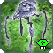 Sprite Striker:
- Mass Cost:
640→ 720 - Build Time:
3600→ 4000 - Health:
450→ 500 - Speed:
3→ 2.85 - Sizex:
0.8→ 0.95 - SizeY:
1.15→ 1.35 - SizeZ:
0.6→ 0.8 - Firing Randomness while moving:
0.5→ 0.3 - Rate of Fire:
0.142→ 0.15 - MuzzleVelocity:
120→ 90 - TurretYawSpeed:
90→ 110
The aeon sniper is better able to shoot while moving and has a higher rate of fire in exchange for less speed and a higher cost.
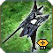 Usha-Ah:
- Mass Cost:
640→ 800 - Energy Cost:
8000→ 8800 - Build Time:
3600→ 4300 - Health:
500→ 700 - Speed:
3→ 2.5 - Acceleration:
3→ 2.5 - UniformScale:
0.08→ 0.095 - SizeX:
0.35→ 0.45 - SizeY:
1.2→ 1.55 - SizeZ:
0.7→ 0.9 - Firing Randomness while moving:
0.25→ 0.4 - Rate of Fire:
0.2→ 0.25 - Firing Tolerance:
0.5→ 3 - Muzzle Velocity:
120→ 80 - TurretYawSpeed:
90→ 70 - Firing Randomness while moving:
0.5→ 0.2 - Rate of Fire:
0.07→ 0.066 - TurretYawSpeed:
90→ 50
The sera sniper shoots more accurately while moving to avoid it wasting shots and it gets a cost increase and speed decrease.
Default Fire Mode:
Ranged Fire Mode:
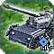 T3 Mobile Artillery:
- Build Time:
4800→ 4300
Build time is reduced for T3 mobile artillery.
Experimental Units
Build Time and misc.:
Experimentals have had very low buildtimes which often made thoughtless mass sinks. With the T3 land nerf Experimentals will be a stronger force on the battlefield so buildtime is increased to compensate for this and to make XPs less of a cheese weapon thrown up in very short periods of time with little build power.
 Cybran:
Cybran:
- Build Time:
15750→ 27500 - Mass Cost:
19000→ 20000 - Megalith Build Time:
18750→ 60 625 - Soul Ripper Build Time:
20000→ 56250 - Scathis Build Time:
50000→ 80000
Monkeylord:
 UEF:
UEF:
-
Fatboy:
- Build Time:
21 000→ 47 500 - Shield Recharge Time:
160→ 120 - Shield Regen Rate:
64→ 100 - Power Upkeep cost:
500→ 600 - Atlantis Build Time:
14 400→ 20 500 - Novax Center Build Time:
25 000→ 30 000
 Aeon:
Aeon:
-
Galactic Colossus:
- Power Cost:
343 750→ 330 000 - Build Time:
20 625→ 51500
Claws:
- Fixed a bug with the claws by adding random EQ code.
- Rate of Fire:
1→ 0.15 - Czar Build Time:
33 750→ 50 625 - Tempest Build Time:
14 400→ 28 000 - Tempest Muzzle Velocity:
28→ 35
 Seraphim:
Seraphim:
-
Ythotha:
- Build Time:
18750→ 46 875 - Mass Cost:
25 000→ 26 500 - Power Cost:
312 500→ 330 000 - Phason Beam Generator Damage:
8000→ 6000 - Gatling Plasma Cannon Damage:
550→ 610 - Heavy Sinn Unthe Cannon Damage:
1200→ 1850 - Flak Damage:
39→ 46 - Flak Range:
25→ 21 - Ahwassa Build Time:
36000→ 67500
Navy
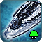 Battleships:
-
Seraphim:
- FiringRandomness:
0.3→ 0.25 - MuzzleVelocity:
30→ 40
-
Aeon:
- TurnRate:
35→ 40 - MaxSpeed:
3.6→ 3.7 - Range:
100→ 105
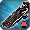 Cybran Carrier:
Fixed the aim on the Anti Air weapon of the carrier.
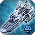 Bulwark:
- Damage Overspill:
15%→ 25% - Recharge time:
35→ 40
 Shard:
Shard:
- Health:
750→ 800
Structures
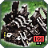 T3 Land HQs:
- Mass Cost:
4 920→ 5 220 - Power Cost:
43 900→ 47 400 - Build Time:
11 000→ 12 100
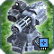 Ravager:
- Health:
7500→ 6500 - Mass Cost:
1 800→ 2 000 - Power Cost:
16 000→ 17 600 - Build Time:
1 500→ 2000
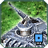 T3 Static Artillery:
T3 static arty now have the same range. Cybran gets an increased rate of fire in exchange for lower damage.
- UEF/Cybran/Seraphim/Aeon Range:
750/700/825/900→ 825
Cybran:
- Damage:
4600→ 3700 - Rate of Fire:
0.1→ 0.13
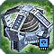 T3 Mass Fabricator:
Adjacency for T3 mass fabs was improved slightly too much in patch 3688 so we are reducing it now.
- Adjacency from storage:
4.1667%→ 3% - Adjacency for SML:
20%→ 12.5%
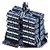 Civilian Structures
Adjusted Civilian Building Mass values to make them more consistent. Civilian buildings will give 50-150 mass.
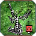 Cybran Shield
Added the ED4 Shield to the list of buildable structures and to the hotbuild keygroup for shields.
Mechanics
Overcharge
This is the first rebalance of Overcharge since patch 3605 and it builds upon the premise of requiring energy storage to OC. We have implemented a variable system of Overcharge so to do greater damage you will need more energy in storage. You will still need to buld an energy storage before you can Overcharge and one storage will suffice for killing T2 units. To kill the heaviest T3 units you will need three storages. When you Overcharge the amount of energy required to kill the unit you hit will be drained from your storage. If you do not have enough to kill the target, most of your energy will be drained but not all so that your shields and radar are not effected.
- The damage dealt by overcharge now scales with the amount of energy drained from storage.
- Overcharge will drain as much energy as is required to kill any unit within the area of effect of the OC, or 90% of your stored energy.
- One energy storage is required to unlock Overcharge.
- One storage is required to kill T1 and T2 land units.
- Up to three storages will be required to kill T3 land units.
- The range of the Area of Effect is now displayed when using Overcharge.
- The OC indicator will turn orange if you do not have enough energy in storage to kill the unit under the cursor.
- The OC indicator will turn green if you have enough energy in storage to kill the unit under the cursor.
- The maximum damage is 15k at a cost of ~45k energy
Damage vs buildings and vs commanders is unchanged from the previous system. We have added new icons to indicate whether you have enough energy to kill the unit under your cursor. Gray is for idle, Orange means you don't have enough energy to kill and green means you will kill the unit if you OC it.
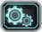 Veterancy
The vet gained from buildings was too high, leading to problems especially with ACU TML.
- Veterancy gained from damaging non-combat buildings is reduced by 50%
- Only a single vet level can be gained for any one kill.
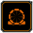 Teleport
Teleporting takes 5 seconds longer. The animation at the teleport destination is unchanged.
Miscellaneous
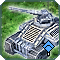 T1 Mobile Anti Air
T1 MAA gets a small damage reduction and mass cost reduction so it doesn't cost more than tanks anymore. Sera MAA is fixed so that is does its intended damage.
-
Aeon:
- Mass Cost:
55→ 50 - Damage:
10→ 8 - Mass Cost:
55→ 50 - Damage:
16→ 14 - Mass Cost:
55→ 50 - Damage:
8→ 14
Cybran:
- Mass Cost:
55→ 50 - Damage:
10→ 9
UEF:
Seraphim:
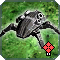 Fire Beetle:
Fire beetles are getting a much needed rebalance to encourage their use within armies.
- Damage:
3500→ 1500 - AoE:
4.5→ 6 - Transport class:
2→ 1 - Stun ability added. Duration → 2s. Stuns all units except Experimentals
- Friendly Fire → Disabled
- Health:
300→ 500
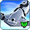 T2 Transports:
- Mass Cost:
300→ 330 - Power Cost:
12000→ 13200 - Speed:
15→ 14.3
 Aurora:
Aurora:
- FiringRandomnessWhileMoving:
0.3→ 0.1 - MuzzleVelocity:
30→ 25
 Ahwassa:
Ahwassa:
- BombDropThreshold:
4→ 20
 T1 Bombers:
T1 Bombers:
- RandomBreakOffDistanceMult:
1→ 1.5
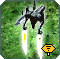 Selen:
Removed the Power drain from the stealth/cloak ability while not moving.
Fixes:
- Nuke trajectory is now corrected so it travels parallel to the ground.
- Selens will no longer lose their radar when there is a power stall.
- Units with personal shields that are unloading from transports will now take damage on their shield when hit.
- The seraphim T2 torp defence wreck is no longer invisible.